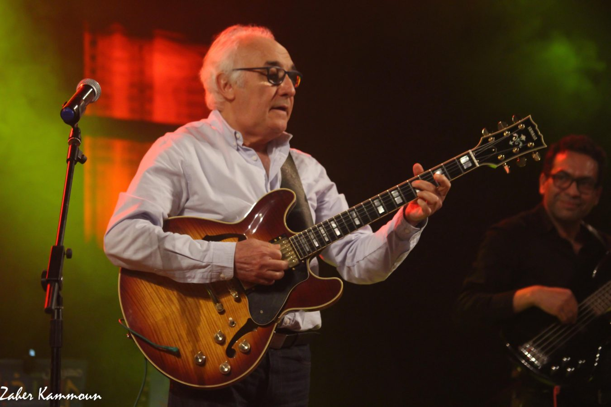

Kablaoui Anouar
Né le 27.02.1985 Guitariste professionnel et auteur compositeur interprète, Nura Hermano est son nom de scène, spécialiste
de la musique flamenco. Nura enseigne la guitare classique et chargé de l'atelier flamenco.
-Expert consultant à international trade & management consulting
-Directeur artistique à PLAY PRODUCTION
-Éducateur spécialiste en musicothérapie (Autisme et ABA)
-FONDATEUR et directeur de l'Académie Supérieure Des Arts
- FONDATEUR et directeur du programme l'Académie Des Autistes
Mr Faouzi Chekili
Fawzi Chekili, est un auteur compositeur interprète et enseignant tunisien, se passionne pour la musique et le jazz qu'il
découvre lors d'un séjour linguistique en Grande Bretagne. Il demeure toujours actif tant sur la scène locale qu’internationale.
A travers sa musique, une dizaine d'albums, Il aime entre autre mélanger les couleurs de sa Tunisie natale aux harmonies
modernes du jazz, il enseigne depuis 2004 à l'Institut Supérieur de Musique à Tunis ainsi qu'au Centre de Musiques Arabes
et Méditerranéennes de Sidi Bou Said, et responsable des ateliers jazz de l'académie supérieure des arts.

Alexandre Puechavy (Paris)
Guitariste et enseignant pédagogue, Alexandre est un spécialiste de Jazz manouche, originaire de France, et très actif sur
la scène professionnelle.
Alexandre enseigne la théorie occidentale en ligne depuis Paris.
Khalil BEN Hmida
Professeur pédagogue de théâtre, diplômé de l'ISAD, Khalil est très actif sur la scène Théâtrale tunisienne, les séries télévisées
le cinéma ou l'éducation. Reporteur acteur et réalisateur.
Elena Izotina
Artiste peintre originaire de Kiev Ukraine, diplômé de l'institut des beaux arts de Kiev, Elena participe régulièrement aux
expositions en Tunisie. Elle met son savoir-faire au service de l'enseignement.
EL HAKIM Foued
EL HAKIM Foued né le 22 Juin 1992 en Lettonie Quatre années de médecine avec succès à la faculté de médecine de Tunis. (Actuellement
en 5ème année d’études en médecine.) Diplôme international en préparation physique et en arts martiaux obtenu a la fédération
internationale de Taekwon-Do ITF (2011).
• Président de l’association des jeunes russophones en Tunisie.
• Directeur de l’école de préparation physique et de Taekwon-Do au centre culturel russe.
• Participation à divers évènements d’un point de vu diplomatique.
• Coaching et consulting des personnes dans le domaine sportif, psychologique, médical, et de bien être.